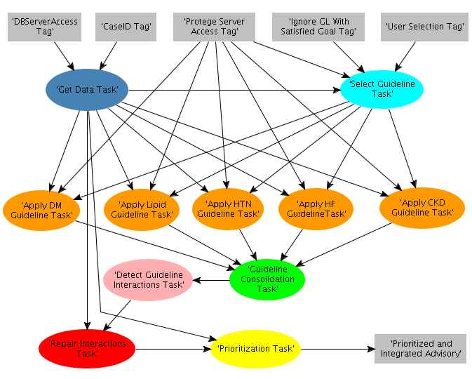

Workflow
Using the Protégé tool, we defined a task-method decomposition of the multi-guidelines recommendation task. The decomposition defines the subtasks and their input-output relationships. In the diagram below, the rectangles are "tags" holding data variables. The five tags at the top we present inputs into the subtasks and the tag at bottom-right, represents the final prioritized and integrated advisory. The ovals represent subtasks with input-output and arrows coming in and out of them. Ovals of the same color represent instances of the same task class. In this case, the five orange ovals represent the Athena CDS being applied to five different guidelines.
